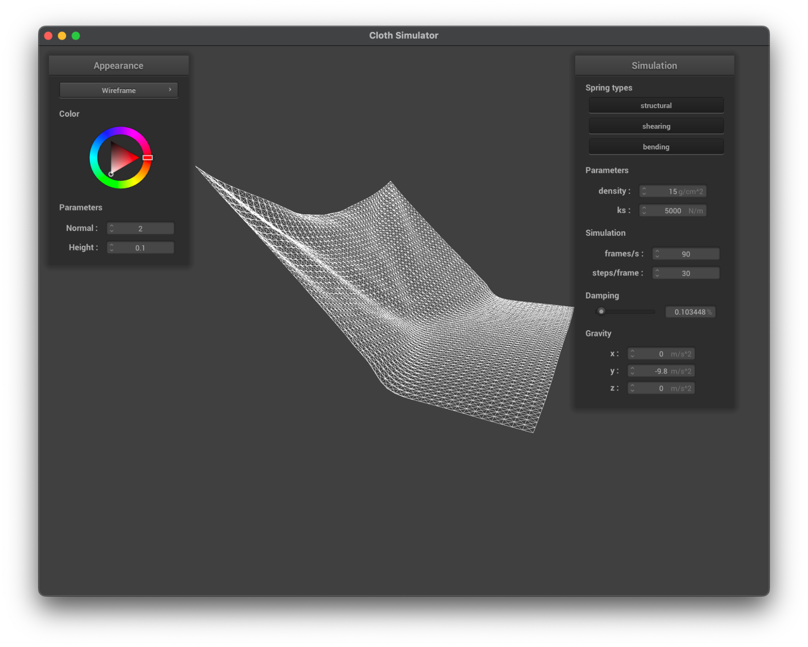
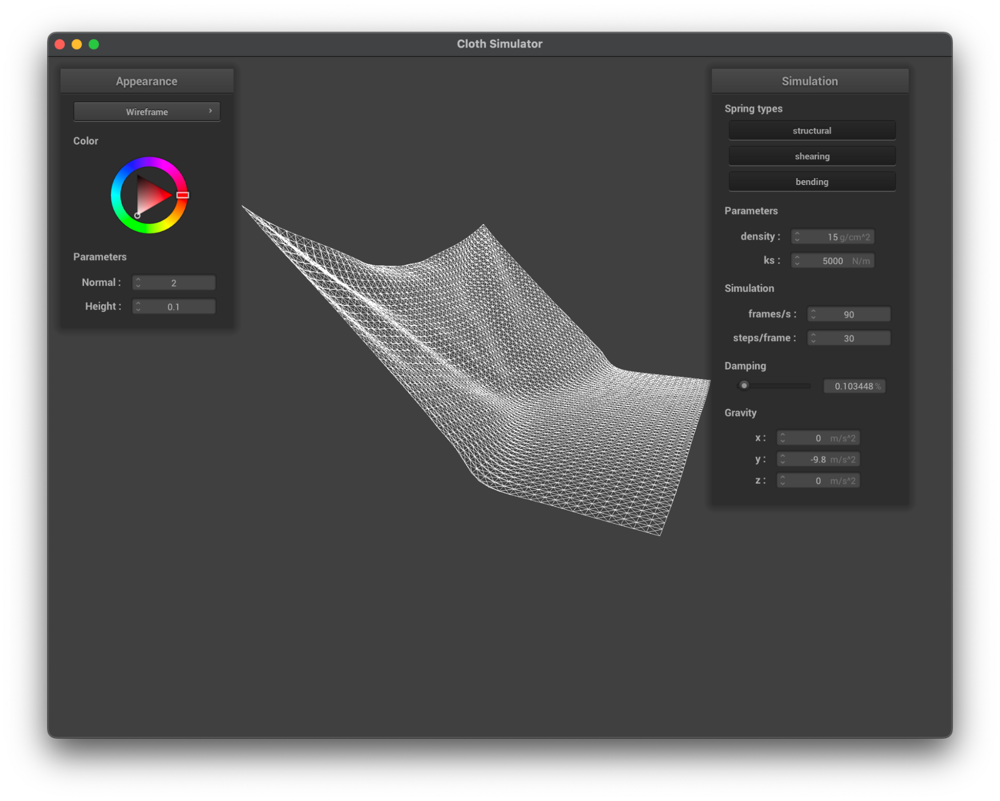

Webpage: https://cal-cs184-student.github.io/hw-webpages-sp24-d-and-j/hw4/index.html
HW4: ClothSim
By: Daniel Hsu and Joseph Liu
In this project, we built a physics simulation where we simulate a cloth. Specifically, we simulate a cloth falling with 2 or 4 of its corners pinned, a cloth falling onto other objects like spheres and planes, and a cloth folding onto itself.
First, we constructed the cloth, which is done by creating a mesh of point masses and springs. We lay out a grid of point masses and connected them with three types of springs. The structural springs resist stretching or compression, the shearing springs resist shearing and sliding forces between adjacent particles, and bending springs resist bending or flexing across the cloth’s surface. Then, we implemented the physics simulation, whereby each point mass and spring interact with each other from one time step to each other, while being affected by gravity. The simulation also takes into account the various physical properties of the cloth, like density, spring constant, and artificial damping force. This creates for us an animated simulation so we can watch the cloth falling with various corners pinned. Then we gave our cloth the ability to collide with other objects like spheres and planes by checking for point-mass to sphere intersection (by using the radius of the sphere and its center) and point-mass to plane intersection (the classic line test from the rasterization project). If a collision is detected, we update the position of the point mass to stay on the outside surface of the object to simulate the collision, factoring in friction as well. Then we considered the case where the cloth would fold in on itself, so we implemented self-collision, which allows the cloth to collide with itself as it creases and folds on itself. Finally, we implemented various texturing and shading models to give our cloth a better look. Some of these include Blinn-Phong (which combines ambient, diffuse, and specular lighting effects), custom textures like pictures, mirror textures, and displacement maps (like bump mapping and displacement mapping).
Each of these contributes a layer of realism to our cloth.
For this part, we implemented buildGrid() to build a grid of point masses and springs to form the cloth. First we set up a function pointer to either horizontalPos or verticalPos based on the orientation of the cloth to avoid duplicating code for different orientations. Then we calculate the distance between masses in the horizontal and vertical directions. Specifically, we divide the total width and height of the cloth by the number of width and height points minus one, respectively. This makes it so the masses are not clustered together or too far apart. Then we iterate over each row and column (we iterate over y first in the outer loop then x in the inner loop to enforce row-major order) and create the PointMass objects, storing them in the point_masses vector. For pinned points, we set the pinned flag to true. After creating all the masses, we create the three types of springs that connect the point masses: structural, shearing, and bending. To create the Structural Springs, we connect each mass to the mass on its left and the mass above it. These simulate resistance to stretching or compression along the length of the cloth fibers. Next we create Shearing Springs, in which we connect each mass to the mass on its left diagonal and the mass on its right diagonal. These simulate resistance to shearing or sliding forces between adjacent cloth particles. Finally, we create Bending Springs, in which we connect each mass to the mass two columns to the left and two rows below it. These simulate resistance to bending or flexing forces across the surface of the cloth.
scene/pinned2.json rendered without any shearing constraints
Rendered with only shearing constraints
Rendered with all constraints.
Spring constant changes how stiff the spring is (larger k means stiffer spring), so with a very low spring constant, the cloth appears to be looser and deforms easier. Additionally, a lower spring constant also causes the cloth to sag and fold more as well as react quicker during the animation. A high spring constant on the other handmakes the cloth stiffer and more resistant to deformation, causing it to react slower to gravity and maintain its overall rigidity, making it look like a tougher fabric. In the animation, a very high spring constant just looks like a piece of paper falling with two of its corners attached.
Notice how the low ks screenshot shows more creases, or more of a reaction because it’s more loose and free to react to forces around it (in this case, the other nodes), whereas in the high ks screenshot, it maintains its original straight shape more.
Left: ks = 100 N/m; Right: ks = 100,000 N/m
Density affects the mass per unit area in the cloth, which determines how much force gravity exerts on it (and later, collisions with other objects and nodes too). For the cloth, a higher density caused the particles in the cloth to react quicker to gravity, causing the area in the line as the pinned corners to sag quickly and stretch out the springs before returning to a more stable shape. For the lower density, it more or less maintains its structure as it floats down, since gravity isn’t super significant enough to overcome the spring force, so gravity is more or less equivalent across the cloth. Additionally, the higher density simulation showed some bouncing action as the cloth initially sagged a lot due to the heavy particles but bounced back as the spring forces acted against it.
Left: density = 150 g/cm^2; Right: density = 1 g/cm^2
Damping helps the cloth reach a steady state by dampening the energy from its movement, effectively slowing down and stabilizing its motion over time. With no damping, the cloth oscillates energetically and bounces everywhere due to there being no absorption of excess energy; it is also very slow to settle, if it even settles at all (we didn’t bother letting it run to steady state). Applying even a small amount of damping greatly reduces the oscillations and bouncing movements, allowing the cloth to float down and settle to a steady state gracefully. Cranking the damping all the way up makes the cloth stiff, as the oscillations and vibrations within the cloth’s internal structure are greatly reduced. We found that varying between non-zero damping forces affects the time it took the cloth to reach steady state and how loose and bouncy it looked on its way down; higher damping made it stiff and not flowy and slow to settle, while lower damping made it more flowy and oscillate more. As for creasing, with a lower damping force, the cloth overall creased more on its way to steady state, while a higher damping force made it so that the cloth barely creased on its way down, creasing only as it reached steady state.
Left: 0% Damping; Right: 0.103448% Damping
Above: 1% Damping
We implement the cloth’s collision with a sphere and a plane. For each, we implement the collide() method, which takes in a point mass and determines its position.
For cloth-sphere collision, we first calculate the vector from the sphere’s origin to the point mass’s current position and check if it’s outside the sphere. If the point mass is outside the sphere, the function returns immediately, as this is acceptable behaviour. Otherwise, the point is within the sphere’s surface, so we need to alter its position to be outside the sphere. We do this by calculating the point on the sphere’s surface that is closest to the point mass by using the unit() function, which returns a unit vector in the same direction as pm_pos_from_origin, and multiplying it by the radius to scale it to the sphere’s radius. Then we update the point mass’s position by moving it from its last position toward the tangent point on the sphere’s surface. We scale this movement by 1 - friction to model the loss of energy due to friction during the collision.
For cloth-plane collision, we first find out which side of the plane the point mass is on by taking the dot product of the plane’s normal vector and the vectors from a point on the plane to the point mass’s last position and current position, respectively, and taking its sign. Then we check if the point mass’s last position and current position are on the same side of the plane. If they are, then we’re done; there is no collision. Otherwise, we calculate the unit vector in the direction from the point mass’s last position to its current position. Then we calculate the line equation of the point mass’s motion by solving the equation for the intersection of the line and the plane. We then calculate the point of intersection between the line of the point mass’s motion and the plane. Next we adjust the point of intersection by a small offset in the direction of the plane’s normal in order to prevent the point mass from getting stuck in the plane due to numerical/floating point precision errors. Finally, we update the point mass’s position by moving it from its last position to the adjusted point of intersection, once again scaling by 1 - friction to model the loss of energy due to friction.
ks=500
ks=5000
ks=50000
The spring constant primarily alters the strength of the spring’s strength, and consequently the cloth’s resistance to deformation. We see this effect in the cloth to sphere collision simulation where we vary the spring constant. We see that for a low spring constant of 500 N/m, there are a lot of creases, because the springs are looser, allowing for more movement and deformation. On the other end, for a high spring constant of 50,000 N/m, we see much fewer creases, with most of the cloth remaining quite stiff. The corners of the cloth have fully drooped, but the edges seem to resist drooping due to the strong spring force acting against gravity in this case. For the moderate spring constant of 5,000 N/m, we see a mix of the two, with a moderate amount of creasing and drooping. We felt that the ks=500 case represented somewhat of a silky and light cloth material, the ks=5000 case representing your usual t-shirt cloth material, and the ks=50000 case representing a stiff cloth, like one that is wet and partially frozen.
Low Density:
With low density, we see that it floats down gracefully, thus producing less but larger creases, as the creases have more time to form. This is because the point masses are accelerating slower and thus experiencing self-collisions less frequently, generating less and thus larger creases. As it folds on itself, the big creases remain, causing the cloth to spread out more than the high-density case.
High Density:
With high density, we see that the cloth is overall heavier and starts creasing everywhere immediately. This is because the point masses are accelerating quicker and thus experiencing self-collisions much more frequently, thus generating much more smaller creases. As it folds on itself, it also remains fairly condensed, folding into a neat column before spreading out and resting.
Low ks:
With low spring constant, we see a more floppy cloth, as the interactions between the point masses are much looser. This makes it so that the cloth has little resistance to bending and is able to produce the many sharp creases we see above, settling into a neat, folded position. This happens because if the cloth has little resistance to bending, it has more opportunities to produce these bends and creases.
High ks:
On the other hand, with a high spring constant, the cloth is more stiff and thus takes more to bend and crease. We see this especially in the middle screenshot, where only after the cloth has fallen on itself a significant amount, does the creases start to form. The result is larger but less frequent creases due to them forming later in the falling process as well as because of the high spring constant making the cloth overall resistant to deformation. The cloth in this case settles as a wider pile as compared to the low spring constant case, because it didn’t deform as much and didn’t have the freedom to make the sharp and frequent creases the low spring constant case was able to make.
A shader program is used to determine the appearance of objects and surfaces for graphics rendering. It works by defining how light interacts with the geometry and the materials of the objects, which determines the visual properties of the object such as color, texture, reflectivity, etc. Two types of shaders are vertex and fragment shaders.
Vertex shaders (.vert) operate on individual vertices of a 3D object and are primarily concerned with transforming the vertices from their original positions in world space to their corresponding positions on screen space. Vertex shaders can also compute per-vertex lighting effects and perform transformations and other vertex-related operations.
A finished vertex shader passes its results onto a fragment shader. A fragment shader (.frag) operates on fragments of the object, which are individual pixels (if natively sampled, else it’s 1 fragment per supersample). It’s primarily concerned with determining the final color of each pixel by considering the lighting, material properties, texture mapping, and other factors that influence the visual properties of the object. Fragment shaders also calculate the color and transparency of each pixel based on input data from the vertex shader, as well as information from and about light sources, textures, material properties, etc.
Vertex and fragment shaders often work together in a pipeline fashion, where the vertex shaders handle geometry and per-vertex calculations, while the fragment shaders handle the per-pixel calculations.
The Blinn-Phong shading model is a shading model used to simulate the interaction of light with surfaces to create realistic lighting effects. The model considers three main components: ambient, diffuse, and specular. The ambient component represents the base/global illumination of the scene, disregarding the direction of the light sources. It applies a set color uniformly across the entire surface of the object. The diffuse component simulates the uniform scattering of light from a surface in all directions, which is found by taking the angle between the surface normal and the direction of the incoming light and calculating the amount of light that is reflected. Finally, the specular model accounts for the highlight or reflection of light off a surface, which produces the glimmering/shiny effect. This is calculated based on the angle between the camera’s direction and the direction of reflected light, which produces a specular highlight where the camera and the light direction align.
Top: Only ambient component
Top: Only diffuse component
Left: Only specular component, resting state; Right: Only specular component, better view
Top: Entire Blinn-Phong shading
Here is a custom texture we applied to the cloth.
The distortion was already part of the image (for funny picture). Here’s the proof:
Left: Bump mapping on cloth; Right: Bump mapping on sphere
Top: Displacement mapping on sphere
Bump mapping produces a more convincing result, as it just produces bumps where the perceived lines on the texture image are. The displacement mapping approach is more extreme, as it physically deforms the geometry of the surface based on the texture map.
-o 16 -a 16 | -o 128 -a 128 | |
Bump | ||
Displacement |
Overall, making the mesh finer just made the sphere smoother. With bump and displacement mapping, if we use a coarse mesh, noise and other details in the texture image can get mixed into the transformation and alter the geometry of the sphere too much, making for a sphere that shows the texture image but is also quite rough overall. If we make the mesh finer, we end up with a smoother sphere that still represents the texture image clearly. This result is reflected for both bump and displacement mapping, as seen in the screenshots.
Top: Mirror shader on cloth
Top: Mirror shader on sphere
Our schedules were both very packed, so we pretty much just worked on the assignment in our own time. We would communicate on what part we were working on, what progress we’ve made, whether we needed assistance with the part we’re working on, etc. Since some parts were independent from each other or could be coded up independently, sometimes we each did a part separately, and if we got stuck, we’d just make a branch and have the other person take a look. Overall, this worked well for us, as it was accommodating to our schedules and allowed us to both get the learning benefits from this assignment, as we’d review each others’ code for each part to ensure both correctness and proper understanding of the concepts.